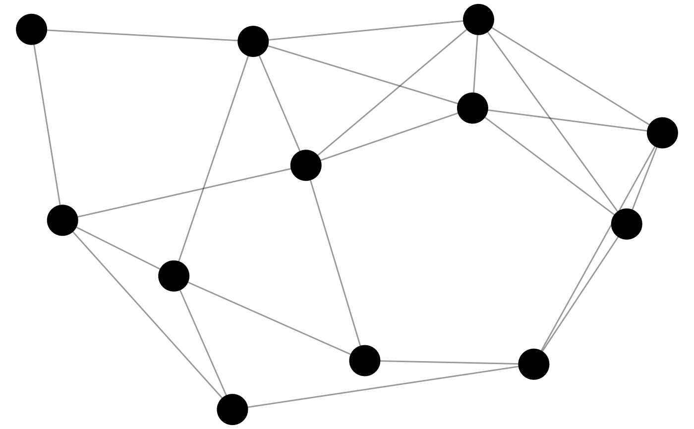
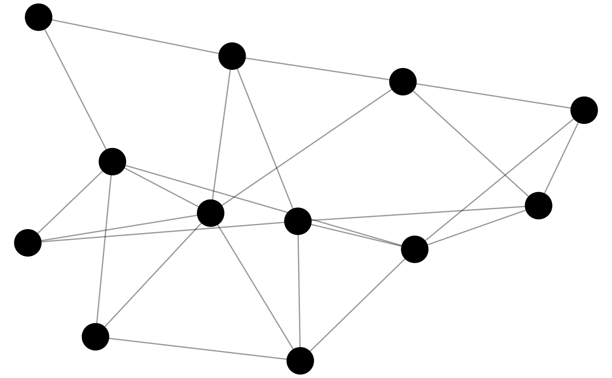
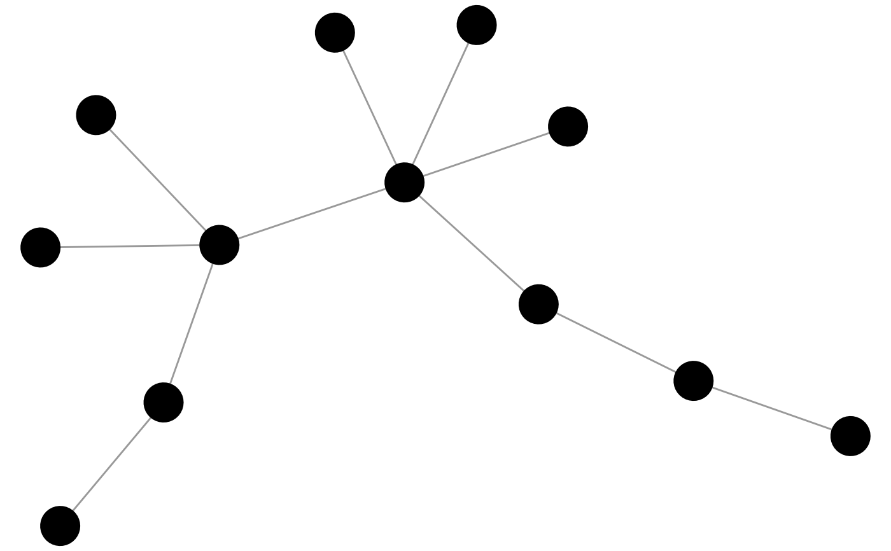
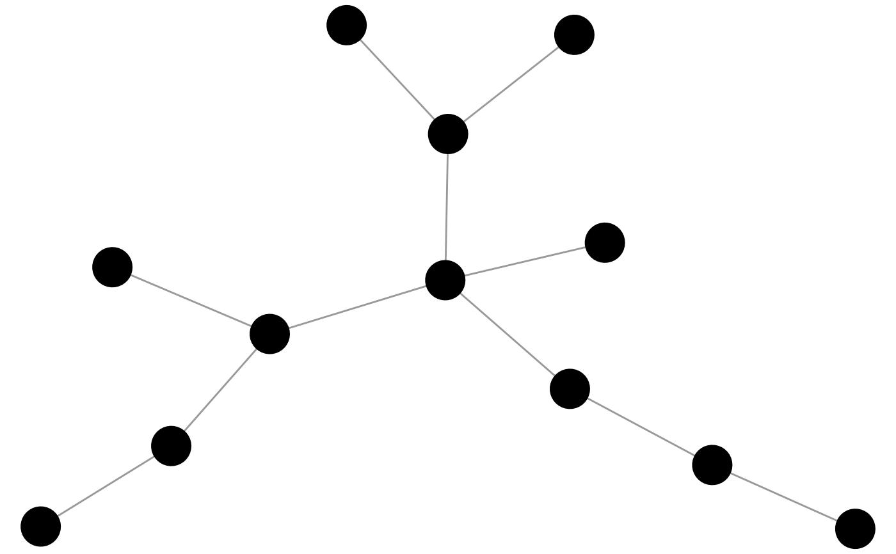

These functions are similar to the create_* functions,
but include some element of randomisation.
They are particularly useful for creating a distribution of networks
for exploring or testing network properties.
generate_smallworld() generates a small-world structure via ring rewiring at some probability.
generate_scalefree() generates a scale-free structure via preferential attachment at some probability.
generate_fire() generates a forest fire model.
generate_islands() generates an islands model.
generate_citations() generates a citations model.
These functions can create either one-mode or two-mode networks.
To create a one-mode network, pass the main argument n a single integer,
indicating the number of nodes in the network.
To create a two-mode network, pass n a vector of two integers,
where the first integer indicates the number of nodes in the first mode,
and the second integer indicates the number of nodes in the second mode.
As an alternative, an existing network can be provided to n
and the number of modes, nodes, and directedness will be inferred.
generate_smallworld(n, p = 0.05, directed = FALSE, width = 2)
generate_scalefree(n, p = 1, directed = FALSE)
generate_fire(n, contacts = 1, their_out = 0, their_in = 1, directed = FALSE)
generate_islands(n, islands = 2, p = 0.5, bridges = 1, directed = FALSE)
generate_citations(
n,
ties = sample(1:4, 1),
agebins = max(1, n/10),
directed = FALSE
)Given:
A single integer, e.g. n = 10,
a one-mode network will be created.
A vector of two integers, e.g. n = c(5,10),
a two-mode network will be created.
A manynet-compatible object, a network of the same dimensions will be created.
Power of the preferential attachment, default is 1.
Whether to generate network as directed. By default FALSE.
Integer specifying the width of the ring, breadth of the branches, or maximum extent of the neighbourbood.
Number of contacts or ambassadors chosen from among existing
nodes in the network.
By default 1.
See igraph::sample_forestfire().
Probability of tieing to a contact's outgoing ties. By default 0.
Probability of tieing to a contact's incoming ties. By default 1.
Number of islands or communities to create.
By default 2.
See igraph::sample_islands() for more.
Number of bridges between islands/communities. By default 1.
Number of ties to add per new node. By default a uniform random sample from 1 to 4 new ties.
Number of aging bins.
By default either \(\frac{n}{10}\) or 1,
whichever is the larger.
See igraphr::sample_last_cit() for more.
By default a tbl_graph object is returned,
but this can be coerced into other types of objects
using as_edgelist(), as_matrix(),
as_tidygraph(), or as_network().
By default, all networks are created as undirected.
This can be overruled with the argument directed = TRUE.
This will return a directed network in which the arcs are
out-facing or equivalent.
This direction can be swapped using to_redirected().
In two-mode networks, the directed argument is ignored.
Watts, Duncan J., and Steven H. Strogatz. 1998. “Collective Dynamics of ‘Small-World’ Networks.” Nature 393(6684):440–42. doi:10.1038/30918 .
Barabasi, Albert-Laszlo, and Reka Albert. 1999. “Emergence of Scaling in Random Networks.” Science 286(5439):509–12. doi:10.1126/science.286.5439.509 .
Leskovec, Jure, Jon Kleinberg, and Christos Faloutsos. 2007. "Graph evolution: Densification and shrinking diameters". ACM transactions on Knowledge Discovery from Data, 1(1): 2-es.
Other makes:
make_cran,
make_create,
make_ego,
make_explicit,
make_learning,
make_motifs,
make_play,
make_random,
make_read,
make_write
graphr(generate_smallworld(12, 0.025))

graphr(generate_smallworld(12, 0.25))

graphr(generate_scalefree(12, 0.25))

graphr(generate_scalefree(12, 1.25))

generate_fire(10)
#> # A undirected network of 10 nodes and 9 ties
#> # A tibble: 9 × 2
#> from to
#> <int> <int>
#> 1 1 2
#> 2 2 3
#> 3 3 4
#> 4 2 5
#> 5 5 6
#> 6 6 7
#> # ℹ 3 more rows
generate_islands(10)
#> # A undirected network of 10 nodes and 10 ties
#> # A tibble: 10 × 2
#> from to
#> <int> <int>
#> 1 1 4
#> 2 2 5
#> 3 4 5
#> 4 2 6
#> 5 6 7
#> 6 7 8
#> # ℹ 4 more rows
generate_citations(10)
#> # A undirected network of 10 nodes and 9 ties
#> # A tibble: 9 × 2
#> from to
#> <int> <int>
#> 1 1 2
#> 2 1 3
#> 3 1 4
#> 4 1 5
#> 5 1 6
#> 6 6 7
#> # ℹ 3 more rows